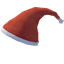
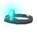
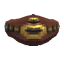
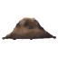
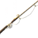
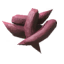
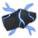
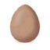
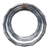

Haldor: plats, varor och priser
Haldor: plats, varor och priser
Haldor är en dvärg och handlare som har slagit läger i Svarta Skogen med sin oxödla Halstein. Han säljer några av spelets mest användbara föremål, framför allt bältet Megingjord som låter dig bära 150 mer i vikt.
Var du hittar Haldor
Haldors läger ligger alltid i Svarta Skogen. Spelet förbereder upp till tio möjliga läger per värld, oftast mer än 1 500 meter från kartans mitt. Det första du kommer i närheten av blir det riktiga lägret, och alla de andra försvinner.
När du är inom några hundra meter dyker en säckikon upp på din karta. Lägret omges av en skyddande bubbla som håller fiender ute. Det går inte att bygga inuti den, men en portal precis utanför bubblan fungerar bra.
Det här säljer Haldor
En del av hans sortiment blir tillgängligt först när du har besegrat vissa bossar. Priserna anges i mynt.
| Föremål | Pris (mynt) | Tillgänglig |
|---|---|---|
 Julemössa | 100 | från början |
 Dvärgadiadem | 620 | från början |
 Megingjord | 950 | från början |
 Kött ifrån Ymer | 120 | när du har besegrat Den Uråldrige |
 Fiskespö | 350 | från början |
 Fiskbete × 20 | 10 | från början |
 Åskvigg | 50 | när du har besegrat Den Uråldrige |
 Ägg | 1 500 | när du har besegrat Yagluth |
 Tunnband × 3 | 100 | från början |
| Wider Pockets | 1 000 | när du har besegrat Moder |
| Deeper Pockets | 2 000 | när du har besegrat Drottningen |
Tips
- Köp Megingjord först. 150 extra i bärvikt hjälper till med allt, från gruvbrytning till att segla hem med järn.
- Dvärgadiademet är en pannlampa som lämnar händerna fria. Det är väldigt praktiskt i kryptor och grottor, men det tar upp hjälmplatsen.
- Wider Pockets och Deeper Pockets ger dig var sin permanent extra rad i packningen. De är dyra men värda vartenda mynt.
- Kött ifrån Ymer behövs till Järnsläggan, Frostner och andra starka föremål. Åskviggar behövs till Transmutatorn.
- Ett Ägg kläcks till en kyckling om du håller det varmt. Två hönor räcker för att föda upp ett eget förråd av ägg och kycklingkött, så du behöver bara köpa två.
- Fiskespöet fungerar bara med bete. Det enkla fiskbetet som Haldor säljer är grunden till alla specialbeten i spelet.
- Spara ihop före resan: med ungefär 2 000 mynt har du råd med bältet, diademet och fiskespöet på ett och samma besök.
Det här kan du sälja
Mynt är den enda valutan, och du får dem genom att sälja värdesaker. Alla tre handlarna köper samma föremål till samma priser. Mynt, rubiner och bärnsten hittar du i Gravkammare, Trollgrottor, Sjunkna kryptor och fulingbyar.
| Föremål | Säljs för (mynt) |
|---|---|
| 175 | |
| 135 | |
| 95 | |
| 55 | |
| 30 | |
| 20 | |
| 10 | |
| 10 | |
| 5 |